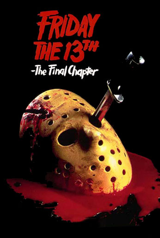

/media/movies/covers/2018/08/91euu0uV0mL._SL1500_.jpg)
Sinopse
Sexta-Feira 13 é um clássico do terror que se passa no misterioso acampamento de verão Crystal Lake. Anos após uma tragédia envolvendo a morte de um garoto afogado e uma série de assassinatos inexplicáveis, o local é reaberto, e um novo grupo de jovens conselheiros chega para prepará-lo para a temporada. No entanto, o que deveria ser um verão tranquilo rapidamente se transforma em um pesadelo quando eles são caçados por um assassino implacável. Enquanto o terror aumenta, os conselheiros lutam pela sobrevivência, sem saber que um segredo sombrio do passado do acampamento está prestes a ser revelado..